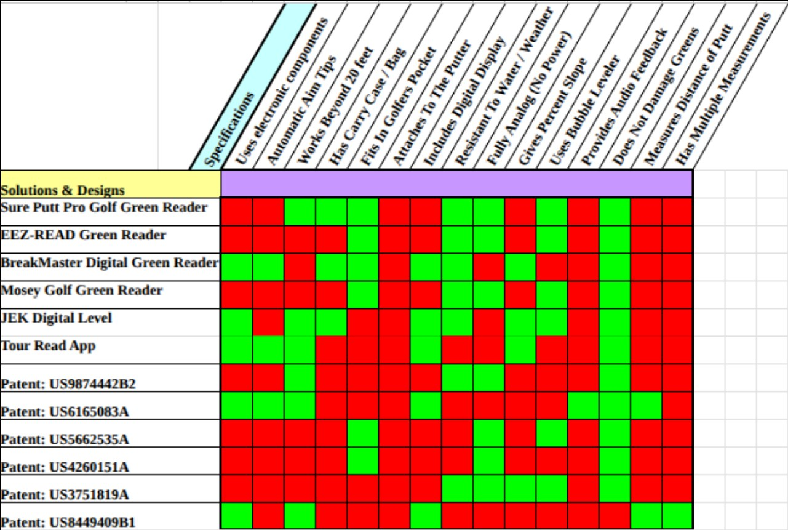

Element C
Presentation and Justification of Solution Requirements
I. Introduction
Problem Statement
In the United States, 44.13% of amateur golfers have 14.9+ handicaps and experience difficulty when reading the slopes of greens.1 This difficulty arises from novice golfers lacking experience with reading breaks and from courses having different types of cuts for the greens. This problem leaves high-handicap golfers unsatisfied with themselves, as they consistently average four to five three-putts per 18 holes and end up shooting high scores. Addressing this issue requires that golf stakeholders, performance criteria, and functional requirements be accounted for. These different pieces of criteria ensure that the solution is extremely accurate, consistently reliable, and applicable to a large portion of the golfing industry.
II. Primary Stakeholders
The primary stakeholders section analyzes the overall market for both golf and green analyzers. Primarily, identifying the different organizations, companies, and even individuals that meet the target market requirements. Looking at various distinct stakeholders will open up the opportunity to design a solution that will meet the performance and needs of the golfing community.
Target Market
- High-handicap amateur golfers (14+)
- Certified golf instructors
- IJGA (Illinois Junior Golf Association) or Jr. PGA trainers
- High school/college golf coaches
- Golf training facilities (with indoor putting greens)
- PGA Superstore & Golf Galaxy retail locations
Overview
Every single stakeholder listed above is impacted by the slope interpretation problem and will each significantly benefit from a potential solution. In particular, golfers with handicaps anywhere above 14 struggle to read breaks in greens as they aren’t as fortunate as professional golfers, who often have caddies or years of experience to assist. Meaning that a solution would crucially affect novice golfers and the average golfer's success on a putting green. In addition, golf instructors and IJGA/PGA trainers will be directly interested as the product can be incorporated in assisting the youth generation of players. Not to mention, high schools and colleges stakeholders are directly impacted as they focus on long-term player development, specifically preparing for the stages at professional levels. Taking into consideration a large group of stakeholders not only guarantees a design created at a very high quality but also meets the expectations of the golfing industry.
III. Design Requirements
The design requirements section both ranks and lists the different criteria through two separate categories: specification type and rationale. For a solution to be successful, the design is required to meet the listed criteria, as the requirements are the essential characteristics to solve the green reading problem. In addition, the requirements are ranked based on importance, from 1 (most important) to 14 (least important).
1. Accuracy
Specification: Angle accuracy shall have ± 2 degrees maximum error.
Rationale (self-imposed): As shown in Figure 3.1, a survey of golf players found that a large majority of respondents rated accuracy as the most critical aspect of a putting assistance device. Therefore, when creating a solution for golf green readers, it is essential to make sure that the product is accurate and has minimal error.

2. Size
Specification: The golf green reading device must not exceed 700 cubic centimeters in volume.
Rationale: The device must be convenient for golfers to carry; therefore, a compact, portable form factor is a primary criterion. This keeps it relatively portable for golfers, giving them the ability to keep the putting device in their golf bag or golf cart.
3. Price
Specification: The build price shall not exceed $100
Rationale: A survey found that about 70% of respondents want a product under $100. This is shown in Figure 3.2 below.

4. Weight
Specification: The device shall have a maximum weight of 400 grams.
Rationale: Existing products, such as the BreakMaster Digital Green Reader, have a mass of approximately 130 grams.2 These devices, however, are much less complex than the technological components the solution being created will have. To account for the multitude of extra components, the device must be around 400 grams, keeping it relatively light.
5. Range
Specification: This device shall work for putts 20 ft or less.
Rationale: It is recommended that golfers spend the majority of their time practicing putts 20ft and in, with an emphasis on putts around 10ft.3
6. Includes Digital Display
Specification: This device shall include a digital display.
Rationale: A digital display allows for a better user interface and experience. This leads to an easier-to-understand device and can also increase the performance of our device. Additionally, many current products have digital displays.4
7. Operating Environment
Specification: This device shall be able to withstand light rain and any outdoor temperatures (-35 °C to 50 °C)
Rationale: This device is being used outside and therefore must be able to withstand the elements. Being water-resistant ensures accurate and safe usage in all weather conditions, thereby maintaining the device's quality.
8. Product Life
Specification: The device shall have a lifespan of at least 3 years under normal outdoor conditions: wind, rain, cold, heat, etc.
Rationale: Most golf-related products on the market have a specified 3-year warranty on electronics.5 To keep up with competitors, the solution shall be able to keep up with the expectations that competitors set.
9. Material
Specification: The solution shall have no sharp points that can lead to injury and utilize a rubberized material.
Rationale: Using a rubberized material around the edges of the solution will smooth out the edges and reduce the chance of dropping the device during use.
10. Aesthetics
Specification: The device shall have a professional appearance, similar to other golf products, in a neutral color.
Rationale: Similar products have a minimalist design, making them appealing to professionals and increasing the usability, meaning there is an industry expecting aesthetic design.
11. Maintenance
Specification: This device shall require no maintenance
Rationale: Requiring maintenance severely diminishes the value of the product, deterring customers from purchasing.
12. Battery Life
Specification: The battery life shall last at least 3 hours and be able to recharge in 1 hour or less
Rationale: This ensures the device can last for a golfer's entire practice routine and can be quickly recharged for continued use.
13. Global Environment
Specification: The device shall not cause harm to a putting surface, any part of a golf course, or the surrounding environment.
Rationale: Being able to function without damage to a course would ensure golfers can use it anywhere. This results in a larger customer base and less deterring from purchasing.
14. Carrying Case
Specification: This device shall have a carrying case
Rationale: A carrying case will provide both protection and ease of transportation. Additionally, as shown in Figure 3.3, only a few prior products include a carrying case, giving the device an advantage over the competition.

IV. Conclusion
To appeal to the stakeholders, the product must include every single piece of criteria listed in the design requirements section. Research and analysis point towards the fact that size, accuracy, and cost are the most critical necessities for the product, as these are the factors golfers from the survey rated as most important. Satisfying each and every factor will ensure that the proposed solution has some form of value amongst a wide range of stakeholders. Golf programs and facilities will benefit alone due to the solution having the ability to align with the market industry standards and meeting consumer demands. Additionally, all handicapped golfers who are open to improving their putting will greatly find value in the solution, as the device will improve their confidence and reduce the individual's average number of three putts. Overall, the individual outlined requirements and range of stakeholders all ensure that the solution is not only effective for the consumer, but also reliable and accurate.
-
Cunningham, Kevin. “Here’s How Your Handicap Index Stacks up against Golfers in the United States.” Golf, 9 Sept. 2020, golf.com/news/how-your-handicap-index-compares/. ↩
-
Shops, Worldwide Golf. “Breakmaster Digital Green Reader - Worldwide Golf Shops - Your Golf Store for Golf Clubs, Golf Shoes & More.” Worldwide Golf Shops, www.worldwidegolfshops.com/breakmaster-digital-green-reader-10535144/p. Accessed 16 Dec. 2025. ↩
-
Marksbury, Jessica. "This is the optimal putt length to practice, according to a golf analytics expert." Golf.com, 19 Dec. 2021, golf.com/instruction/putting/optimal-putt-length-to-practice-lou-stagner/. ↩
-
"Digital Green Reading." Old Duffer Golf, oldduffergolf.com/digital-green-reading/. ↩
-
“NX10 Slope Rangefinder.” Precision Pro Golf, precisionprogolf.com/products/nx10-slope-rangefinder. Accessed 16 Dec. 2025. ↩